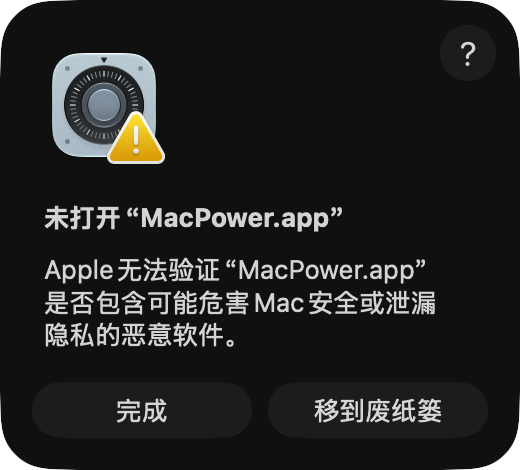
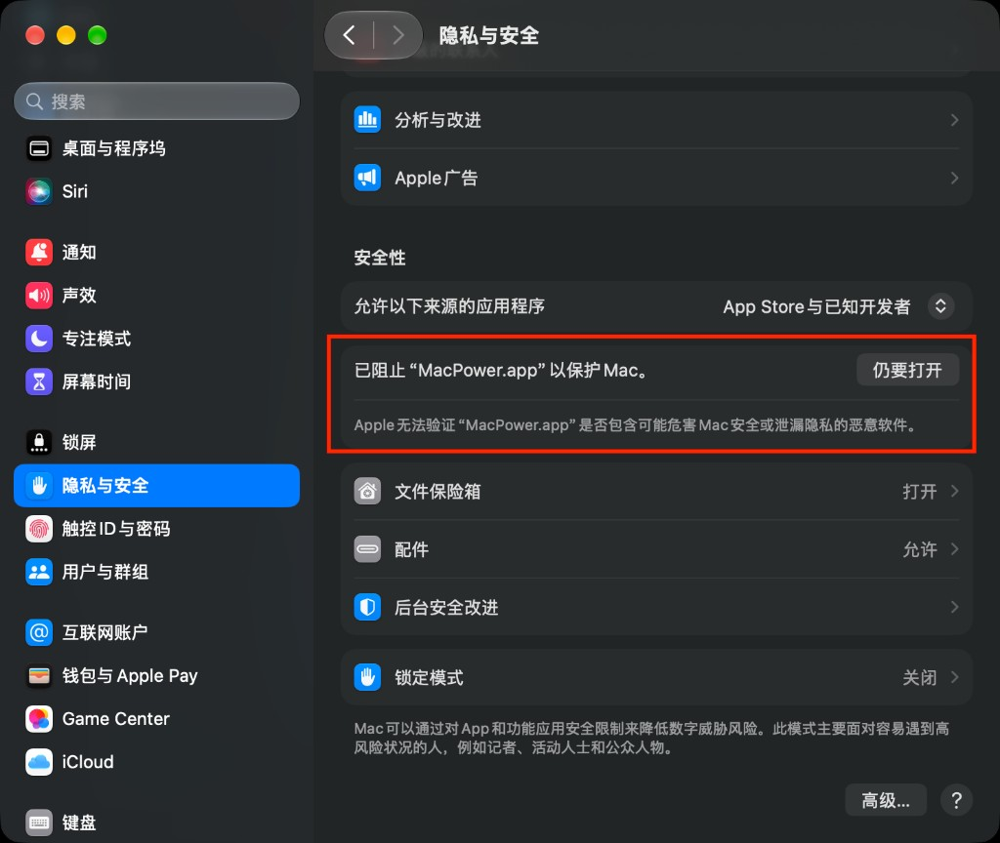

MacPower 是菜单栏电池监视器，不进 Dock。需要 macOS 14 或更高，以及带电池的 Apple 芯片 MacBook。
安装包没有经过 Apple 公证。我没有购买 Apple 开发者账号，个人账号每年 99 美元，所以系统会拦住第一次打开。这不是病毒。MacPower 是开源软件，代码都在仓库里，如果里面有病毒，看源码就能看出来。
MacPower-*.dmg，把 MacPower 拖进 应用程序。
打开 系统设置 → 隐私与安全，把右边页面拉到「安全性」最下面。看到 已阻止「MacPower.app」以保护 Mac 后，点右边的 仍要打开，再按提示确认。

打开「终端」，粘贴下面的命令并回车。输入密码时屏幕不会显示圆点，输完直接回车：
sudo xattr -rd com.apple.quarantine /Applications/MacPower.app也可以不下载磁盘镜像，在终端执行：
brew install --cask --no-quarantine ryanstarfox/tap/macpower--no-quarantine 是必须的。官方 homebrew/cask 不接收这类安装包，这里用的是个人 tap。